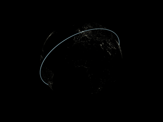
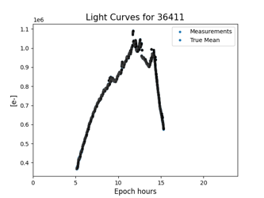
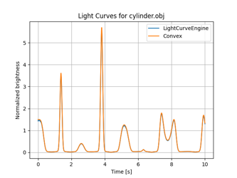
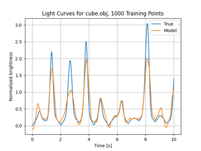
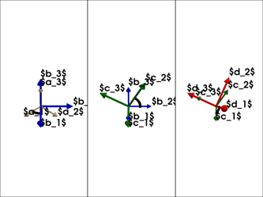

Examples Gallery#
Orbits#
TLE catalog management, TLE switching, high-fidelity propagation


Propagating single TLE


Light Curves#
Simulating normalized convex and non-convex light curves, with and without noise, observer constraints, and orbital motion


Noisy Light Curves

Convex vs Engine Light Curves

Neural Network Brightness
Lighting#
Setting up and using various Bidirectional Reflectance Distribution Functions (BRDFs)


Coordinate Frames#
Computing and visualizing coordinate frame transformations


Environment#
Background optical noise sources, solar cycles


Plotting Options#
Visualizing the Earth and other things

Rigid Body Attitudes#
Visualizing various attitude profiles and parameterizations


Euler Angle Sequence

Observer#
Computing and visualizing things from the perspective of a geodetic observer